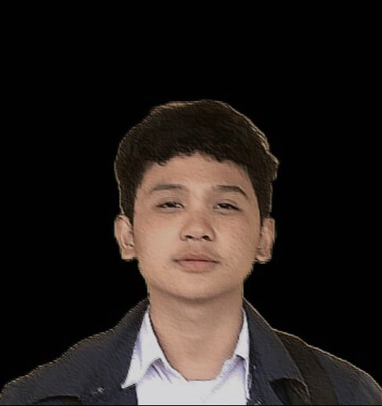

About Me
Khidr Ghazally
I am a student from SMK Tunas Media who has a great spirit and dream. Since I was young, I have always dreamed of becoming one of the influential people in changing the world, even if it's just a small impact. I always like to try new things and I dislike wasting time.
Skills
- Photoshop
- Illustrator
- Write
- Excel
- Wordpress
- Cameraman
Education
- SDN Bojongsari 04, 2013-2019
- SMP PGRI 363, 2019-2022
- Multimedia major in SMK Tunas Media 2022-Now
- Team Cameraman in TM News 2023-Now